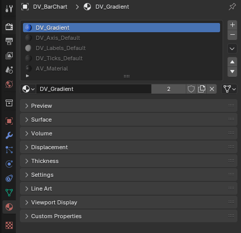
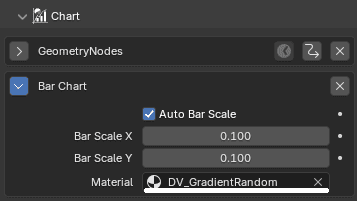
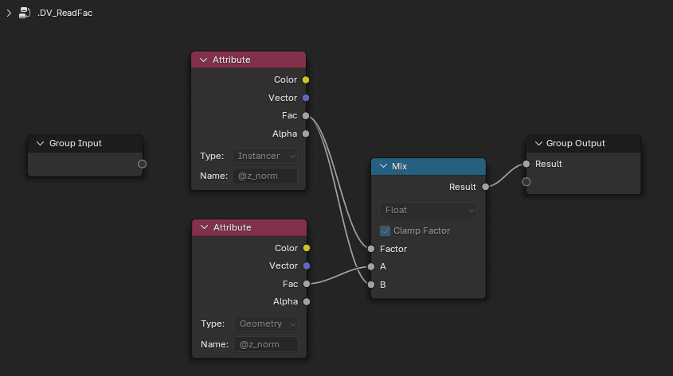
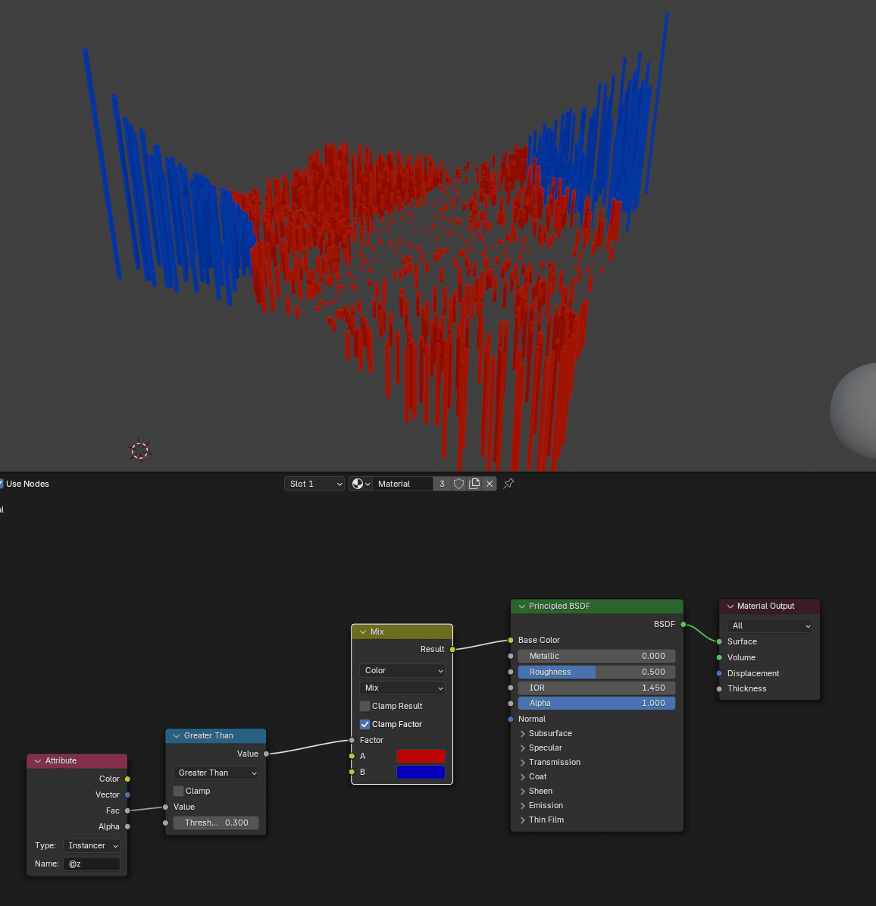

Color
All presets are based on Base Color that's can be chosen when creating chart.
Following color presets are available directly in the addons as predefined materials.
| Preset Name | Description |
|---|---|
| Gradient | Smooth transition between colors based on normalized values. |
| GradientRandom | A gradient with randomly selected colors. |
| HueRandom | Random values with different hue near the Base Color. |
| Constant | A single, constant color for all elements. |
| Sign | Colors based on the sign (positive/negative) of the data values. |
Customizing color
Custom material can be used. Create a material and assign it to the Material input
in the DataVis panel or in the modifier panel.
Materials are added to the Chart Object
All materials used by the geometry nodes are available in the Material tab and are assigned
to material slots.


The generated chart mesh contains various attributes that you can use to customize the color.
Use the Attribute node to read the attributes.
| Attribute Name | Description |
|---|---|
@z |
(Float) The z value of the data. |
@z_norm |
(Float) Normalized z value of the data to 0-1 range. |
@min |
(Vector) Minimum of the data. |
@max |
(Vector) Maximum of the data. |
@scale |
(Vector) Scale of the container size for the chart. |
Attribute Type
When using the Attribute node, some charts use Instancer type, other's need Geometry type.
You can use the .DV_ReadFac node group that returns the used attribute or implement your own.

For example you can highlight certain values by using the @z attribute and several other nodes.
